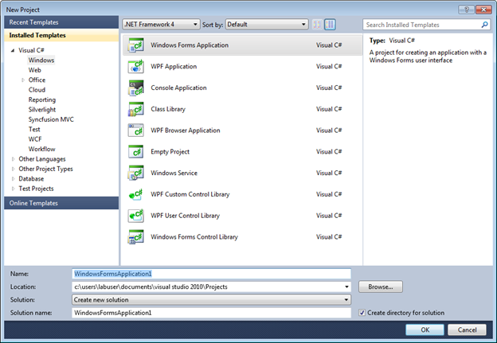
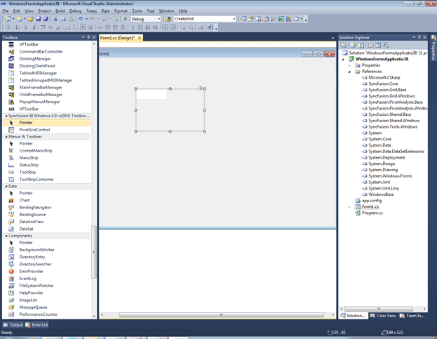

To create the PivotGrid through Visual Studio:
1. Open the Start menu, and then click Microsoft Visual Studio 2008.
2. On the File menu, click New Project. The New Project dialog box appears as follows.

Figure 4: New Project Dialog Box
3. Select WindowsForms Application, and then click OK.
4. Drag the PivotGridControl control from the Toolbox to the Design page.

Figure 5: PivotGrid in Design page